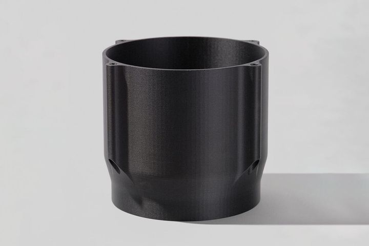

Packaging Machinery
包裝機械的變更速度與客製需求通常都很高，客戶型號多、節奏快。Markforged 適合支援客製化夾爪、導正件、轉換件與小量備件。
產業背景
包裝設備往往需要針對不同產品快速調整。只要可快速內製換線零件與工裝，設備商與終端工廠都能明顯縮短交期與調機時間。
推薦切入
適合各式客製換線零件與工裝。
以 17-4PH 或 H13 製作特定金屬機構零件與高磨耗件。
讓不同機型與客戶版本的零件有更清楚的管理方式。
導入價值
縮短設備調整與客製交付時間。
降低客製工裝與備件成本。
提高設備商與終端工廠的反應速度。